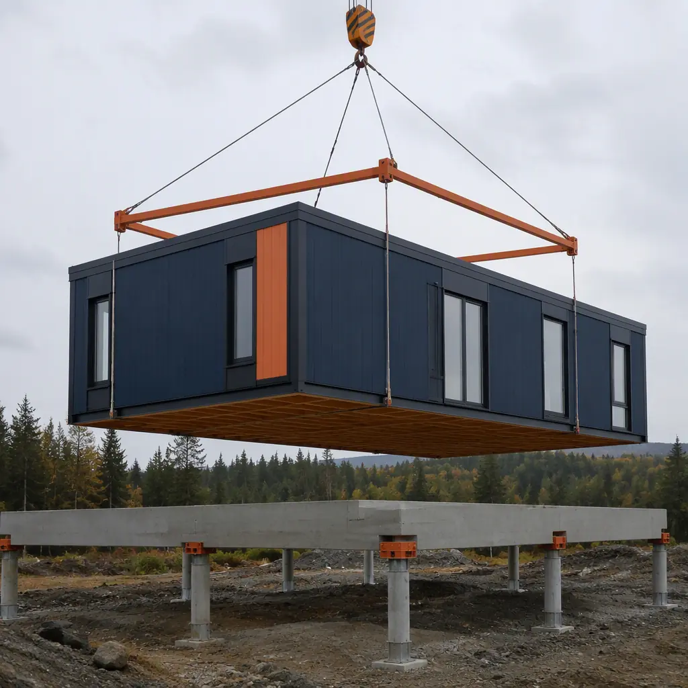
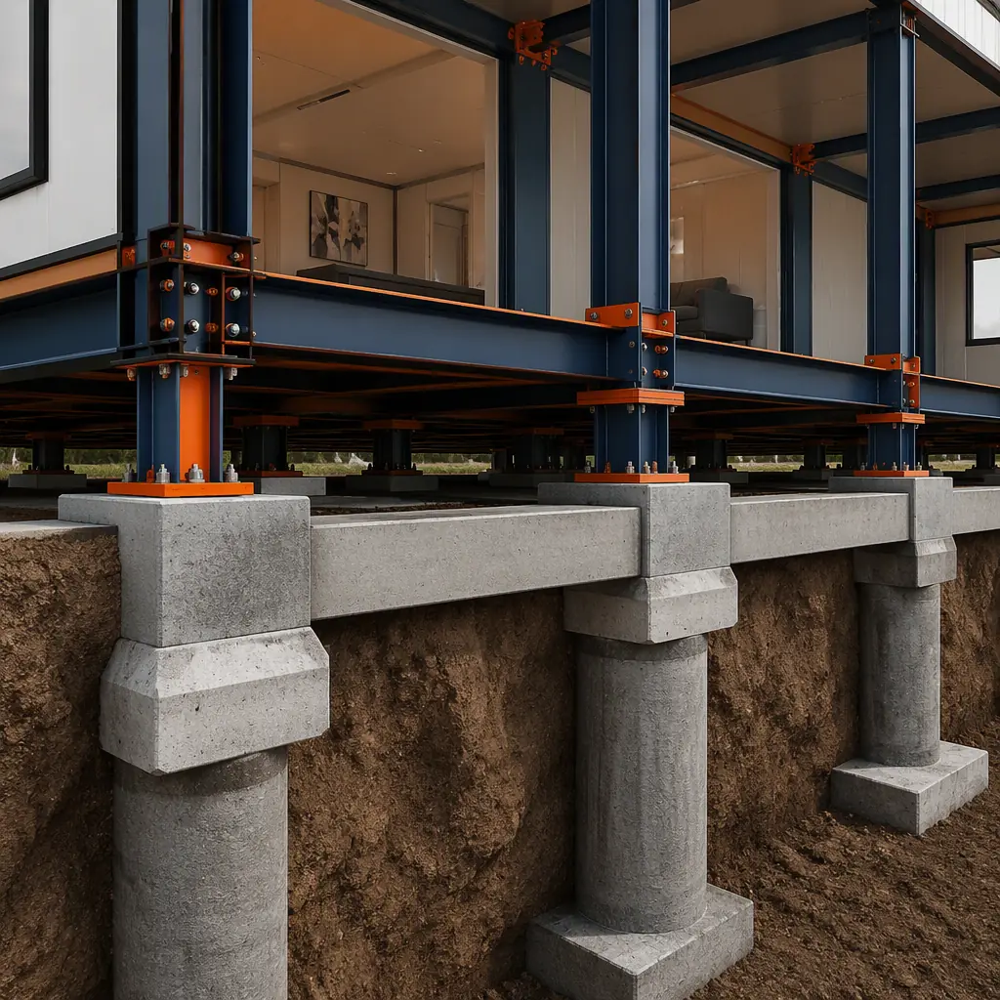

Every building starts in the ground — and modular buildings are no exception. While the modules themselves are built in a factory, the foundation system that supports them is constructed on-site, and getting it right is the single most consequential decision in a modular project. A foundation that is out of tolerance by 20mm can cascade into module alignment failures, weather seal gaps, and structural rework that wipes out the schedule gains modular construction is supposed to deliver. This guide covers the four foundation types used in modular construction, their cost ranges, soil preparation requirements, and how to select the right system for your project.

Why Modular Foundations Are Different
A conventional building distributes its structural load continuously along perimeter and interior load-bearing walls. A modular building concentrates its load at discrete points — the corners and mid-span bearing points of each module. A single 12m × 3.6m apartment module weighs 12–18 tonnes and transfers that entire load through 4–6 bearing points. This point-load characteristic means modular foundations require different design logic than conventional spread footings.
The tolerance requirement is the other critical difference. Conventional foundations tolerate ±25mm variation because site-built framing can absorb deviations with shims, trim, and on-site adjustment. Modular buildings need ±5mm tolerance at bearing points because factory-built modules have fixed dimensions. A 10mm height difference between two adjacent piers means the module-to-module connection won't align, the weather seal won't compress uniformly, and the interior finishes will show a step at the marriage line. For a detailed look at how factory precision demands site precision, see our guide to modular factory QC systems.
Foundation Type 1: Pier and Beam
Pier and beam is the most common modular foundation system, accounting for approximately 65% of mid-rise modular projects. It consists of reinforced concrete piers (typically 400–600mm diameter) drilled or poured to below the frost line, supporting a grid of steel I-beams or reinforced concrete grade beams. The modules sit on the beam grid, with the space between piers creating an accessible crawl space for MEP distribution.
| Parameter | Pier and Beam |
|---|---|
| Cost per m² | $85–$140 |
| Construction Time | 3–5 weeks for a 2,000 m² building |
| Best For | Mid-rise (2–6 stories), sloping sites, expansive soils |
| MEP Access | Excellent — full crawl space for plumbing/electrical runs |
| Seismic Performance | Good — piers can be designed with ductile reinforcement |
The pier and beam system excels on sites with moderate slopes (5–15% grade) because pier heights can be varied to create a level platform without extensive cut-and-fill. It also performs well on expansive clay soils, where the pier depth (typically 3–6m) reaches stable strata below the zone of seasonal moisture fluctuation. For projects in seismic zones, our guide to modular seismic design covers reinforcement strategies for pier-foundation buildings.
Foundation Type 2: Slab-on-Grade
Slab-on-grade foundations use a continuous reinforced concrete slab (typically 100–150mm thick) poured directly on prepared subgrade. Modules sit on the slab, with hold-down bolts cast into the concrete at module bearing points. This system is most common for single-story modular buildings and projects on flat, stable soils with bearing capacities above 150 kPa.
Cost: $65–$110 per m². Construction time: 2–4 weeks. The lower cost comes from simplicity — one concrete pour instead of multiple piers plus a beam grid. The trade-off is reduced MEP access (plumbing must be stubbed up through the slab at precise locations) and poor performance on expansive or poorly drained soils. Slab-on-grade also requires a flatter site (less than 5% grade) because the slab itself forms the level plane.

Foundation Type 3: Grade Beam on Piles
For poor soil conditions — low bearing capacity (below 75 kPa), high water table, or fill sites — a grade beam on piles system drives steel H-piles or helical piles to competent strata (8–25m depth) and caps them with a continuous reinforced concrete grade beam. The modules bear on the grade beam at discrete points, with pile spacing determined by structural load and soil conditions.
Cost: $150–$280 per m² (the premium over pier and beam reflects the deeper pile driving and the continuous grade beam). This system is mandatory for sites with bearing capacities below 100 kPa, fill depths exceeding 2m, or liquefaction risk in seismic zones. It's the most expensive foundation type but the only viable option for difficult ground conditions — and the cost is site-driven, not a modular construction premium. For projects on challenging sites, see our guide to flood-resistant modular construction which covers foundation strategies for coastal and high-water-table locations.
Foundation Type 4: Basement and Podium Structures
For urban projects requiring underground parking or mixed-use podium levels, the foundation is a conventional reinforced concrete basement or transfer slab. Modular construction begins at the podium level — the concrete structure below is built using traditional methods. The key interface challenge is the transition from conventional concrete tolerances (±25mm) to modular bearing point tolerances (±5mm), which is typically achieved with a 50–75mm leveling grout bed and adjustable steel bearing plates cast into the podium slab.
Cost: $250–$450 per m² for the basement/podium structure (this is standard commercial construction cost, not a modular-specific cost). For projects considering mixed-use designs with commercial space at ground level and modular residential above, see our guide to mixed-use modular developments.
Soil Investigation — The Non-Negotiable First Step
Foundation design begins with a geotechnical investigation, and cutting corners here is the most expensive mistake a developer can make. A proper investigation for a modular building requires:
- Minimum 3 boreholes for buildings under 2,000 m², 5+ for larger footprints, extending 3m below the deepest planned foundation element.
- Standard Penetration Test (SPT) values at 1.5m intervals to determine soil bearing capacity. Values below N=4 indicate very loose soils requiring pile foundations.
- Atterberg limits testing to determine soil plasticity index — critical for expansive clay identification. PI values above 25 indicate high expansion potential requiring pier foundations below the active zone.
- Groundwater table measurement at time of investigation plus seasonal high estimate. A water table within 1.5m of foundation depth requires waterproofing and potentially dewatering during construction.
- Sulfate and chloride testing for concrete durability design. Sulfate class DS-3 or above requires sulfate-resisting cement.
A $15,000–$25,000 geotechnical investigation that prevents a $500,000 foundation failure is not a cost — it's insurance. For the full scope of pre-construction planning, see our guide to modular construction permitting and zoning.
Foundation Tolerances — The Make-or-Break Specification
Modular building foundations must meet a tolerance specification that conventional foundations don't. The critical numbers:
- Bearing point elevation: ±5mm from design elevation across all points on the same floor plate.
- Bearing point plan position: ±10mm from grid lines.
- Level across adjacent bearing points: maximum 3mm deviation (measured with a rotating laser level).
Achieving these tolerances requires a two-stage process: the initial concrete pour to within ±15mm, followed by a survey-and-shim stage using steel shim plates or adjustable bearing assemblies. The survey is performed with a total station the day before module delivery, and any points outside tolerance are corrected before the crane arrives. This tolerance discipline is also essential for BIM coordination; see our guide to BIM digital workflows in modular construction.
Cost Comparison Across Foundation Types
| Foundation Type | Cost/m² | Timeline | Best Soil | Max Stories |
|---|---|---|---|---|
| Pier and Beam | $85–$140 | 3–5 weeks | 150+ kPa bearing | 6 |
| Slab-on-Grade | $65–$110 | 2–4 weeks | 150+ kPa, flat site | 2 |
| Grade Beam on Piles | $150–$280 | 5–8 weeks | Poor soil (<75 kPa) | 6+ |
| Basement/Podium | $250–$450 | 8–16 weeks | Any (excavated) | 10+ |
For a complete project cost breakdown including foundation, modules, and finishes, see our 2026 modular construction cost per square foot guide.
Frost Protection and Cold Climate Foundations
In cold climates (ASHRAE Climate Zones 5–8), foundations must extend below the frost line to prevent frost heave from lifting the structure. Frost depth ranges from 0.9m (Zone 5, moderate) to 2.4m (Zone 8, severe). For pier foundations, this means the pier bottom must be 300mm below the frost line. For slab-on-grade in cold climates, rigid foam insulation (typically 50–100mm XPS) is installed below and around the slab perimeter to prevent frost penetration, a technique known as Frost-Protected Shallow Foundation (FPSF) design. For more on thermal performance in modular buildings, see our guide to modular building energy efficiency.
Planning a modular project and evaluating foundation options? Contact our engineering team for a site-specific foundation assessment including geotechnical review, cost modeling, and construction scheduling. Free initial consultation available.